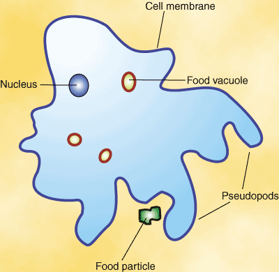

Understanding Antimicrobials and the Importance of Proper Usage
Chapter 3: Antiparasitics

Parasites are unique among the other types of antimicrobials in that they consist of two types of cells: unicellular and multicellular.
This means that while many parasites consist of only one cell (unicellular), like all bacteria, they can also take the form of multicellular organisms, like all fungi. This requires multiple types of antiparasitic treatment that target these different structures.